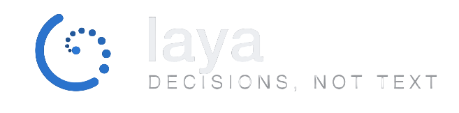

Vigilancia Espacial Continua del Mar Argentino con Radar SAR y Fusión Criptográfica
Frente a flotas pesqueras extranjeras que apagan sistemáticamente sus transpondedores AIS para saquear el calamar Illex argentinus en el Agujero Azul, OceanEye procesa radar orbital Sentinel-1 SAR para atravesar niebla y noche patagónica, aislar buques oscuros y emitir actas periciales selladas con SHA-256 y firma digital Ed25519 con plena validez judicial federal.
Los Cuatro Pilares Tecnológicos de OceanEye
Diseñado sin maquetas comerciales ni IA de juguete. Un sistema riguroso de ciencias de la computación, física de microondas y derecho público del mar.
01. Física de Radar SAR (Sentinel-1 Dual-Pol)
La banda C (5.405 GHz) no depende de la luz solar ni se bloquea por las densas tormentas australes. Mediante polarización cruzada (canales VV y VH), suprime la dispersión de Bragg provocada por el oleaje oceánico patagónico y detecta el rebote diedro de alta reflectividad (>+50 dB RCS) propio del acero naval.

9.12 ms · 64 TESELAS02. Triage Determinista LAYA (Sistema 1)
En lugar de procesar gigabytes de océano vacío en GPU, el motor determinista LAYA computa varianza estadística en micro-latencia, descartando el mar vacío y elevando únicamente las teselas con anomalías SAR.
03. Visión Dual-Pol + Validador Neuro-Simbólico
El Desafío Físico: El umbral CA-CFAR detecta anomalías de retrodispersión, pero las crestas de olas de 6 metros en el Atlántico Sur provocan falsas alarmas (sea clutter).
Nuestra Solución: Pipeline de detección CA-CFAR + segmentación SAM 3.1 y validador determinista de reglas sobre narrativas de muse-wonder-1.0 y muse-spark-1.3:
04. Cadena de Custodia Criptográfica (Ed25519)
Cada detección se sella con un hash SHA-256 canónico y firma digital asimétrica Ed25519 verificable en el navegador con WebCrypto. Probá alterar un solo byte del payload pericial abajo para verificar el rechazo criptográfico inmediato:
Caso de Estudio (Escena Sintética): LU RONG YU 588 (SAR-TGT-001)
Escena sintética calibrada (seed 1982) de un contacto de radar sin señal AIS en el escenario de evaluación del Atlántico Sur.
Contacto bajo Análisis: Potero Calamarero LU RONG YU 588
Dirección Científica del Proyecto
Iniciativa de investigación científica concebida y desarrollada de forma individual, orientada a la protección de la biodiversidad marina y la soberanía del Mar Argentino.
Ing. Químico Gastón Chevarria
• 2026: Visión convolucional ResNet-18 Dual-Pol y teledetección SAR en el Mar Argentino (OceanEye).
python3 verify.py